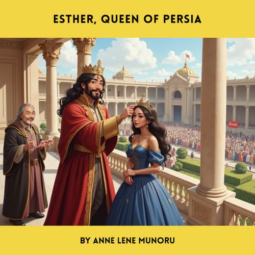

Noah's Ark
God chose Noah to save creation from a great flood. After building the ark and taking animals aboard, the floodwaters covered the earth. When the water receded, a dove returned with an olive branch. God made a covenant with Noah, symbolized by a rainbow.

Moses
Moses was saved as a baby and raised in Pharaoh’s palace. Called by God through a burning bush, he led the Israelites out of Egypt after plagues forced Pharaoh to let them go.

Daniel and the Lion's Den
Daniel remained faithful to God and was thrown into a lion’s den. God sent an angel to shut the lions’ mouths. The king acknowledged God's power.
David and Goliath
Young David defeated the giant Goliath with a sling and a stone, showing faith in God over fear.
Jonah
Jonah tried to flee God's call but was swallowed by a fish. After repenting, he preached in Nineveh, and the people repented.
Adam and Eve
Adam and Eve disobeyed God by eating the forbidden fruit. They were expelled from Eden, beginning humanity's need for redemption.
Hannah
Hannah prayed for a child and promised to dedicate him to God. God answered, and Samuel was born and served at the temple.

Queen Esther
Esther risked her life to save her people. Her wisdom and courage brought justice to the Jews in Persia.

Three Boys in the Fiery Furnace
Shadrach, Meshach, and Abednego refused to worship an idol and were saved by God in the furnace. The king praised their faith.
Preorder Details
10,000 copies – 9.99 € per unit
20,000 copies – 8.99 € per unit